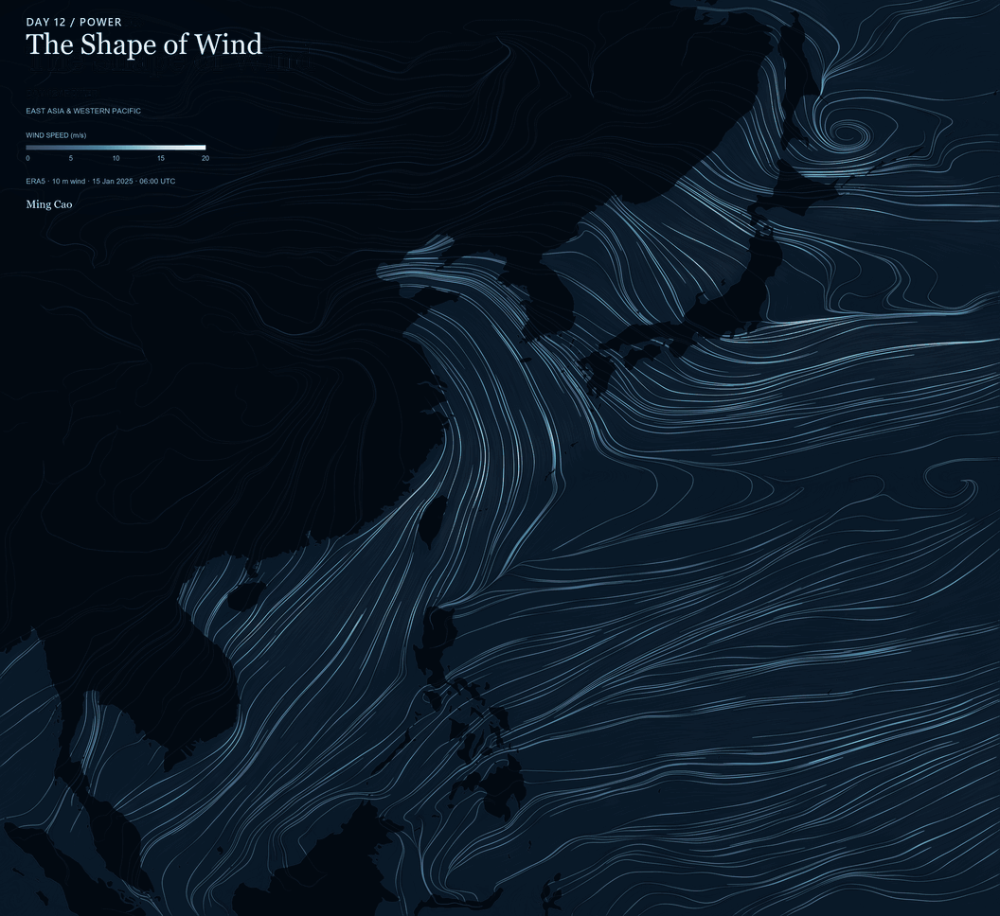
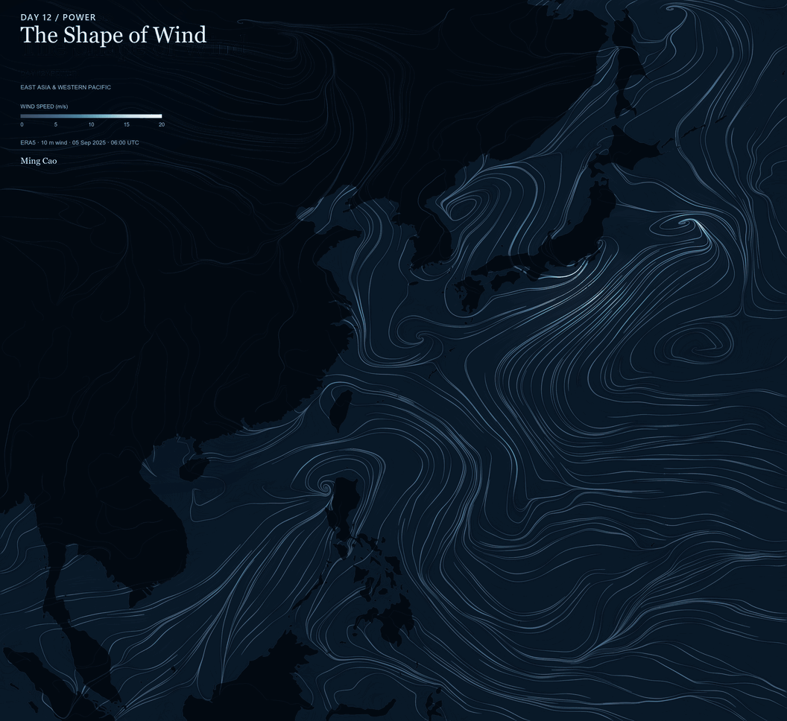

DAY 01 / POINTS
NYC Changing Station Explorer
Public changing-table locations across New York City are mapped from NYC Open Data restroom records and grouped by reported placement.
Python · JavaScript · Leaflet · Playwright
Maps and spatial illustrations by Ming Cao.
DAY 01 / POINTS
Public changing-table locations across New York City are mapped from NYC Open Data restroom records and grouped by reported placement.
Python · JavaScript · Leaflet · Playwright
DAY 02 / LINES
Recorded waterfront paths in Jersey City and Brooklyn are classified by surface and walking-permission tags from OpenStreetMap.
Python · JavaScript · SVG · Pillow
DAY 03 / POLYGONS
Activity spaces and paths in three Jersey City parks are mapped from OpenStreetMap polygons and tags. Separate panels use metric scales and a shared location map.
Python · Pillow · Shapely · pyproj
DAY 04 / MY DATA
Playgrounds and licensed childcare centers in Jersey City and Hoboken are mapped from OpenStreetMap and NJ licensing records. Grouped playgrounds are linked to centers within a 400 m straight-line threshold.
Python · Pillow · Shapely
DAY 05 / SIGHT
Lower Manhattan is illustrated from a waterfront viewpoint using NYC building footprints and roof heights. Separate silhouette layers move at different speeds to create a depth effect.
Python · SVG · Pillow
DAY 06 / VINTAGE
A NYPL harbor chart cataloged as possibly dating to 1844 is overlaid with NYC DCP and OpenStreetMap shorelines. A six-parameter affine transform aligns the historical scan with modern mapped geometry.
Python · Pillow · Shapely · pyproj
DAY 08 / UTOPIA
An imagined neighborhood around Rittenhouse Square is based on OpenStreetMap street and park geometry. Vector-drawn scenes show space for caregivers, children, and everyday activities.
Python · SVG · Pillow
DAY 09 / URBAN-RURAL
Taiwan's twenty most common surnames are shown as population-scaled glyphs using MOI household-registration counts. Schematic placement is combined with NOAA ETOPO depth bands.
Python · SVG · Pillow
DAY 10 / PROMPTING ONLY
UNESCO cultural heritage locations across East Asia are classified by documented historical formation phases. Official site records and reviewed evidence support the component-level map and interactive timeline.
Python · JavaScript · SVG · Pillow
DAY 11 / SENSES: SOUND
Recorded pronunciations of “水” across Cantonese-speaking communities are mapped from Academia Sinica Xiaoxuetang survey records. Initials are encoded by color and finals by categorical wave patterns over Natural Earth and NOAA ETOPO geography.
Python · SVG · Pillow · NumPy
DAY 12 / POWER
ERA5 10 m wind fields from 15 January and 5 September 2025 are shown over East Asia and the western Pacific. RK4 streamlines and brightness animation follow each fixed snapshot, with Natural Earth land as context.
Python · NumPy · Numba · Pillow


DAY 13 / INTERACTIONS
Late-evening home-area associations for the 40th Street area are mapped from Advan Neighborhood Patterns+ records for August and September 2025. CBG-level contributions and statistical links represent scaled associations, not unique visitors or observed routes.
R · JavaScript · Leaflet · SVG · Microsoft Edge
Not publicly available due to data-source permission requirements.
Publication will follow once permission is confirmed.
DAY 14 / BORGESIAN MAP
Four real cities. Infinite impossible geographies.
Fragments of Philadelphia, Nanjing, Guangzhou, and New York City are continuously rearranged into three impossible urban geographies. Each composition preserves real urban forms while transforming their spatial relationships.
Python · NumPy · Shapely · pyproj · Matplotlib · Pillow
DAY 15 / INSIDE OUT
Inspired by traditional Chinese local gazetteer maps, this pictorial interpretation of Philadelphia uses selective landmarks, repeated architectural symbols, and simplified connections to reveal the city's character. Two rivers frame a geography where relative relationships matter more than precise distances.
Python · NumPy · Shapely · Matplotlib · SVG
DAY 16 / COLLABORATIVE MAP
An Atlas of NJ Transit Disruptions
An animated atlas of NJ Transit service disruptions, exploring how different reported causes affect the regional rail network. Based on 234 update-adjusted service notices from November 9–15, 2026, the map highlights affected rail services across seven disruption categories.
Question by Chiun Heng Chou · Mapping by Ming Cao
Python · Matplotlib · Shapely · PyProj · Pillow
DAY 17 / LIGHT & DARK
Navigation Lights of New York Harbor
An artistic night map of New York Harbor's navigation lights, combining documented light rhythms with illustrative lighthouse beams.
Python · JavaScript · NumPy · Pillow
DAY 19 / SENSES: SMELL
A Smellscape of SoHo, New York
An interactive-inspired smellscape of SoHo, revealing how mapped aroma sources and historical odor reports relate to building-constrained street space.
JavaScript · Python · Shapely · Pillow
DAY 20 / HEXAGONS
Estimated Population Density Across the New York–New Jersey Urban Core
This animated hexagon map compares estimated daytime and nighttime population density around Manhattan and across the Hudson River using LandScan USA 2021.
Python · Rasterio · Shapely · Matplotlib · Pillow
DAY 21 / OPENSTREETMAP
At the same scale, West Village’s angled streets create triangular blocks. SoHo and Midtown both show regular street grids, but their blocks read differently: the SoHo window shows small gaps within blocks, while the Midtown window shows more continuous building footprints.
Python · Shapely · pyproj · Matplotlib · Pillow
DAY 22 / PROJECTIONS
The animation follows Typhoon Bolaven (2023) across the Pacific. Watch the northern outline as the projection switches. It appears larger on Mercator, while Equal Earth keeps all three outlined areas equal in size.
Python · NumPy · Shapely · pyproj · Matplotlib · Pillow
DAY 23 / SENSES: TASTE
This tasting map brings together selected regional teas and tea drinks across Asia. The animation highlights groups of tasting notes and ends with the full map, where shaded regions locate the teas and cup icons mark examples of how tea is served.
Python · NumPy · Shapely · pyproj · Matplotlib · Pillow
DAY 24 / NETWORK
My husband works in SoHo and lives in Summit, New Jersey. Sometimes his journey home takes more than three hours, and I find myself wondering what happened along the way. I made this map to understand his route home and the connections it depends on, hoping for a more reliable and comfortable public transit journey.
The animation compares his usual commute with alternatives during the Portal North Bridge cutover. I used published transit schedules and service advisories to check route patterns and transfer points, then drew each option as a schematic over a geographic basemap with Census TIGER/Line water polygons and USGS 3DEP elevation data. The maps show how the connections change during the reroute. Historical door-to-door travel times were not verified.
Python · NumPy · Shapely · pyproj · Rasterio · Pillow
DAY 25 / IS THIS A MAP?
One island, two kinds of mountains. I drew elevation and population density along the same east–west transects across Taiwan. As the two landscapes fade into each other, the peaks shift from the mountain ranges to the populated western lowlands and the north. The two views use separate vertical scales.
Python · NumPy · Rasterio · Matplotlib · Pillow
DAY 26 / WATER
I followed Enfield Creek downstream through Enfield Glen, New York, to see how a series of waterfalls appears in a river’s elevation profile. The animation links each highlighted drop in the profile to the same reach on the map, showing where the creek descends in steps.
Python · USGS 3DHP · USGS 3DEP 1 m DEM · Rasterio · Pillow
DAY 27 / NEW TOOL
I used PyVista to render the terrain of Lalashan, Taiwan, and traced the giant-tree trail across its slopes. Trees and waterfalls collaged from classical Chinese paintings bring the landscape into dialogue with the terrain model, while drifting mist reveals and conceals the ridges.
古画拼贴素材｜《早春图》、《树色平远图》、《双松平远图》、《江渚风林图》、《素庵图》、《潇湘图》、《松阴飞瀑图》
Collaged in Photoshop.
Python · PyVista · Pillow · Photoshop

DAY 28 / SENSES: FEELING
Inspired by Baudelaire’s flâneur, The Wanderer follows an autumn stroll through Philadelphia’s Rittenhouse Square. Footprints quicken across open stretches and slow near café tables, autumn trees, and a street accordionist. The route and its changing pace are illustrated.
Python · OpenStreetMap · NumPy · Shapely · Pillow